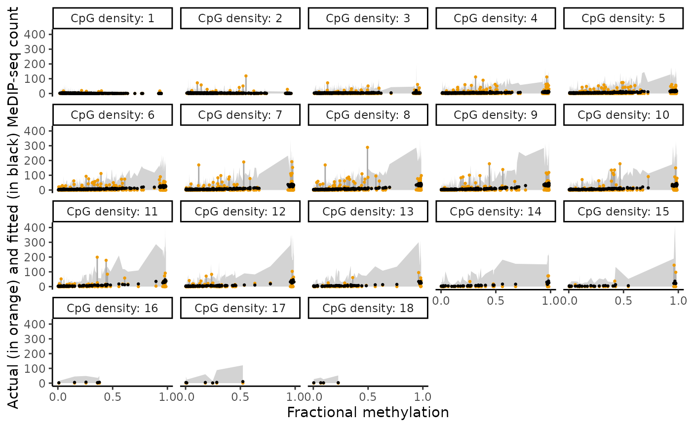

Diagnostics for model fitting in decemedip
plotDiagnostics.RdDiagnostics for model fitting in decemedip
Usage
plotDiagnostics(
decemedip_output,
plot_type,
model_fit_n_samples = 100,
model_fit_label_size = 12,
model_fit_align = "hv",
...
)Arguments
- decemedip_output
The output from
decemedipfunction.- plot_type
A string value, either 'y_fit' or 'model_fit'.
plot_type='y_fit'provides the fitted MeDIP-seq read counts vs. fractional methylation values, indicating the fitted relationship between MeDIP-seq counts and fractional methylation.plot_type='model_fit'provides a set of diagnostic plots for the fitted Stan model.- model_fit_n_samples
Number of randomly selected posterior samples for plotting the diagnostic plots of stan fit. For
plot_type = 'model_fit'only.- model_fit_label_size
Label size in the plot grid. For
plot_type = 'model_fit'only. See the argumentlabel_sizeinplot_gridfor details.- model_fit_align
Specifies how graphs in the grid should be aligned. See the argument
aligninplot_gridfor details.- ...
Additional arguments to be fed into
plot_gridin the case ofplot_type = 'model_fit'.
Examples
data(pdx.counts.cts.se)
data(pdx.counts.anc.se)
# read counts of cell type-specific CpGs of the sample 'LuCaP_147CR'
counts_cts <- SummarizedExperiment::assays(pdx.counts.cts.se)$counts[,'LuCaP_147CR']
# read counts of anchor CpGs of the sample 'LuCaP_147CR'
counts_anc <- SummarizedExperiment::assays(pdx.counts.anc.se)$counts[,'LuCaP_147CR']
# Fit decemedip model (iter=100 for demonstration, by default iter=2000)
output <- decemedip(counts_cts = counts_cts, counts_anc = counts_anc, iter = 100)
#> Warning: The largest R-hat is NA, indicating chains have not mixed.
#> Running the chains for more iterations may help. See
#> https://mc-stan.org/misc/warnings.html#r-hat
#> Warning: Bulk Effective Samples Size (ESS) is too low, indicating posterior means and medians may be unreliable.
#> Running the chains for more iterations may help. See
#> https://mc-stan.org/misc/warnings.html#bulk-ess
#> Warning: Tail Effective Samples Size (ESS) is too low, indicating posterior variances and tail quantiles may be unreliable.
#> Running the chains for more iterations may help. See
#> https://mc-stan.org/misc/warnings.html#tail-ess
#> MCMC converged with seed 2024
plotDiagnostics(output, plot_type = "y_fit")
